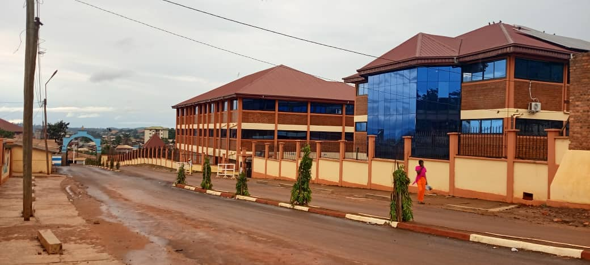
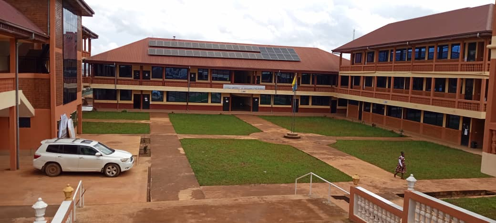
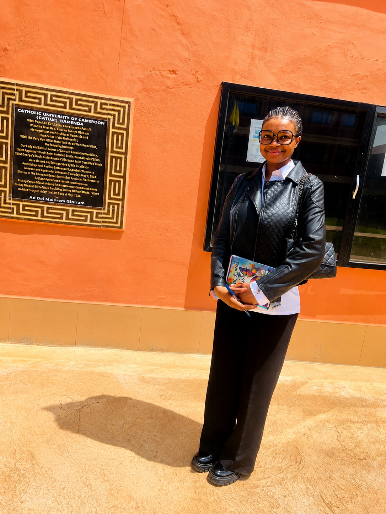

A smart navigation platform designed to help students, lecturers and visitors navigate CATUC Bamenda quickly and efficiently.

Campus Navigation is a web application developed to simplify movement around the CATUC Bamenda campus. It enables users to locate lecture halls, departments, hostels, laboratories, the library, administrative offices, and other important facilities.
Instead of asking for directions, users simply search for a location and receive the shortest route instantly.
To provide an intuitive and reliable digital navigation experience for everyone visiting CATUC Bamenda.
To modernize campus movement using interactive mapping and smart routing technology.
Reduce time spent searching for campus buildings while improving visitor experience.


Frontend Developer
Project Supervisor
Case Study Institution
Start navigating CATUC Bamenda using our smart campus navigation system.
View Locations